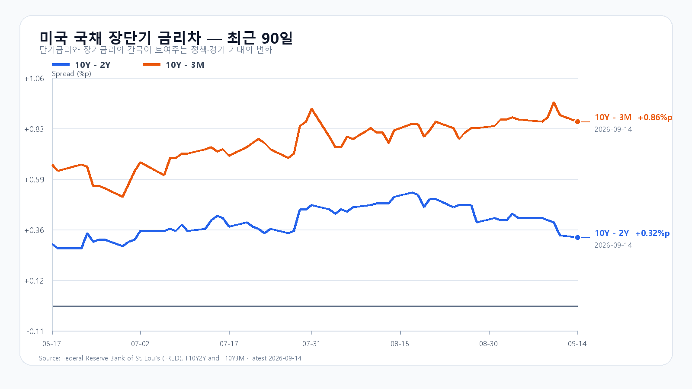
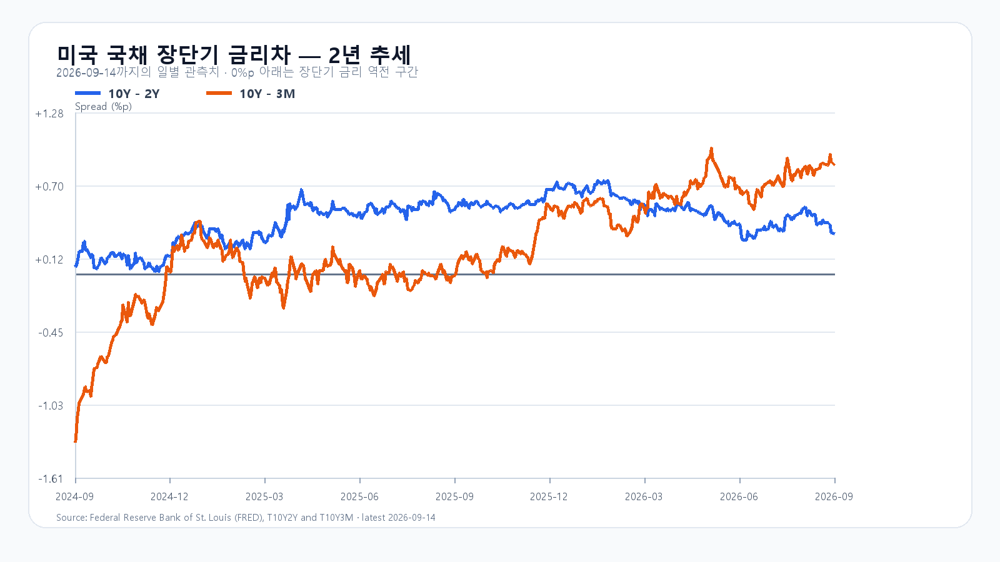

전일 KOSPI는 6,684.37로 3.26% 하락했다. 시가는 6,692.61, 장중 고가는 6,773.97, 저가는 6,654.82였다. KODEX 레버리지는 102,095원으로 7.18% 내렸고 삼성전자는 249,000원, SK하이닉스는 1,697,000원에 마감했다. 오늘은 전일 저점과 가까운 6,650선에서 매도를 버틸지가 첫 관건이다. KOSPI 일봉, KODEX 일봉.
미국 시장은 지수보다 반도체의 낙폭이 훨씬 컸다. QQQ는 0.80%, TQQQ는 2.41% 내렸지만 SOXX는 5.63%, SMH는 4.75% 하락했다. Nvidia는 3.36%, AMD는 4.40%, Micron은 5.25%, Broadcom은 4.77% 떨어졌다. 시간외 거래에서는 이들 ETF와 종목이 소폭 반등했으나, 정규장 낙폭을 되돌린 흐름은 아니다. QQQ, SOXX, SMH, Nvidia, AMD, Micron, Broadcom의 9월 14일 장 마감과 시간외 표시 기준이다.
이번 매도는 AI 투자 속도와 미래 성장에 높은 값을 매겼던 주가가 재평가되는 흐름으로 해석한다. Dario Amodei의 제안은 AI 능력 개선 속도를 조절하자는 것이며, 모델 훈련과 기술 진보의 중단을 뜻하지는 않는다. Amodei 원문. 이 논쟁은 주말부터 알려져 월요일 한국장도 먼저 반응했다. 오늘 새로 더해진 정보는 미국 반도체 매도의 강도다. 국내 주가가 얼마나 더 밀리는지, 외국인 매도가 이어지는지가 추가 충격의 크기를 가른다. AP의 9월 12일 보도.
메모리 현물도 주가와 분리해서 봐야 한다. TrendForce의 9월 14일 표에서 DDR5 16Gb 4800/5600의 세션 평균은 54.333달러로 보합이었다. DDR4 16Gb 3200은 0.56% 내렸고 DDR4 8Gb 3200은 0.79% 올랐다. 품목별 현물 가격의 엇갈림은 HBM 계약가격이나 메모리 수요 붕괴를 뜻하지 않는다. 반도체 주가의 급락을 단기 현물 수급 변화로 곧바로 번역해서도 안 된다.
높은 금리는 미래 이익의 현재 가치를 낮추는 부담이다. 미 국채 10년물은 장중 5%를 넘었지만 9월 14일 재무부 일별 수익률은 4.97%였다. 같은 날 3개월물은 4.11%, 2년물은 4.65%로 10년-2년 금리차는 0.32%포인트, 10년-3개월 금리차는 0.86%포인트다. 전 거래일보다 10년물은 1bp, 2년물은 2bp, 3개월물은 4bp 올라 금리차는 조금 좁아졌지만 금리 수준 자체는 높아졌다. 성장 기대가 주가에 많이 반영된 반도체주에는 부담이 남는다. 미 재무부 일별 수익률, Reuters 장중 금리.
유가도 반등을 제약한다. 사우디 송유관과 해운 차질 우려로 장중 약 5% 뛰었던 유가는 트럼프의 이란 협상 의향 발언 뒤 상승폭을 줄였다. 브렌트 정산가는 105.68달러로 1.0%, WTI는 101.39달러로 1.3% 올랐다. 협상 기대가 장중 불안을 덜었어도 한국 기업의 수입 비용을 높이는 유가 수준은 남아 있다. Reuters 유가 정산.
AI 인프라의 실제 수주와 주가 평가도 따로 움직인다. Oracle은 9월 10일 실적에서 클라우드 인프라 매출이 74억달러로 121% 늘었고 분기 중 추가한 AI 클라우드 계약이 300억달러를 넘었다고 밝혔다. 이미 발표된 수주가 남아 있는 가운데, 시장은 앞으로 투자와 이익이 늘어날 속도에 더 낮은 값을 매기고 있다. Oracle 실적.
| 미국 자산 | 9월 14일 정규장 등락률 | 시간외 흐름·9월 15일 KST |
|---|---|---|
| QQQ | -0.80% | +0.09% · 07:53 |
| TQQQ | -2.41% | +0.12% · 07:45 |
| SOXX | -5.63% | +0.46% · 07:51 |
| SMH | -4.75% | +0.37% · 07:34 |
| Nvidia | -3.36% | +0.62% · 07:38 |
| AMD | -4.40% | +0.08% · 07:50 |
| Micron | -5.25% | +0.27% · 07:50 |
| Broadcom | -4.77% | +0.49% · 07:49 |
기본 종가 범위는 6,650~6,800, 확률은 45%로 둔다. 전일 저점 부근인 6,650선을 지키고 6,800 이하에 머물며 15시 20분 외국인 현물 순매도가 1조원 이내일 때를 가정한다. 외국인과 프로그램 매도가 함께 이어지며 6,650을 깨면 약세 시나리오에 무게가 실린다. 반대로 6,800을 넘고 두 수급이 모두 순매수라면 반등의 근거가 강해진다. 아래 조건은 각 행의 세 항목을 모두 충족해야 한다.
| 종가 시나리오 | 범위·확률 | 15시 20분 성립 조건 | 무효화·전환 신호 |
|---|---|---|---|
| 기본 | 6,650~6,800, 45% | 6,650 이상 · 6,800 이하 · 외국인 순매도 1조원 이내 | 범위 이탈 또는 외국인 순매도 1조원 초과 |
| 강세 | 6,800 초과~6,950, 20% | 6,800 초과 · 외국인 순매수 · 프로그램 전체 순매수 | 6,800 이하 또는 수급 반전 |
| 약세 | 6,400~6,650 미만, 35% | 6,650 미만 · 외국인 순매도 · 프로그램 전체 순매도 | 6,650 회복 또는 수급 반전 |
종가 전체 범위와 별도로 장중 예상 고저 범위는 6,300~7,050으로 넓게 둔다. 두 전체 범위의 목표 신뢰수준은 90%이며 실제 적중률을 뜻하지 않는다. 대응 점수는 공격 15, 관망 40, 방어 45다. KODEX 레버리지는 전일 저가 100,885원을 지지선, 전일 시가 102,500원을 반등 기준, 전일 고가 105,215원을 저항선으로 본다. 개장 뒤 9시 30분에는 첫 방향과 외국인 수급을, 10시에는 6,650선의 유지 여부를, 14시에는 프로그램 매매와 지수의 방향 전환을 확인한다.
다음 큰 일정은 9월 16일 21시 30분 KST의 미국 소매판매·수출입물가와 9월 17일 03시 KST의 FOMC 결정이다. 소비와 물가가 금리 전망을 어떻게 바꾸는지가 반도체 반등의 지속성에도 영향을 준다. 미 Census 소매판매 일정, BLS 일정, 연준 FOMC 일정.
장전 가격
| 항목 | 가격·변화 | 출처 시각 |
|---|---|---|
| 삼성전자 NXT | 248,500원 · -0.20% | 2026-09-15T08:17:09.379542+09:00 |
| SK하이닉스 NXT | 1,688,000원 · -0.53% | 2026-09-15T08:17:09.379552+09:00 |
| 달러/원 하나은행 고시 | 1,348.50원 · 0.35% | 2026-09-15T07:57:13+09:00 |
| Nasdaq100 선물 | 29,454.00 · +0.015% | 2026-09-15T08:06:56+09:00 · 지연 시세 |
| S&P500 선물 | 7,695.25 · +0.032% | 2026-09-15T08:07:06+09:00 · 지연 시세 |
| 브렌트 선물 | 106.36 · +0.643% | 2026-09-15T08:03:41+09:00 · 지연 시세 |
| WTI 선물 | 101.97 · +0.572% | 2026-09-15T08:06:03+09:00 · 지연 시세 |
NXT · 환율 · Nasdaq100 선물 · S&P500 선물 · 브렌트 · WTI
NXT는 국내 정규장과 별도 시장이다. 환율은 은행 고시이며 선물은 지연 시세다.
삼성전자와 SK하이닉스 NXT는 08:13에 각각 +0.20%, +0.24%까지 돌아섰으나 마지막 조회에서는 다시 소폭 하락했다. 짧은 장전 반등만으로 매도 압력이 끝났다고 볼 수 없다. 정규장에서 전일 저점 방어와 외국인 매도 완화가 함께 이어져야 반등의 근거가 강해진다.

